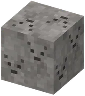
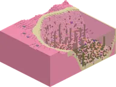
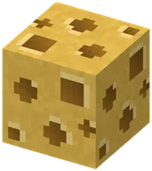
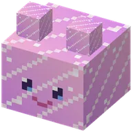
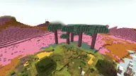
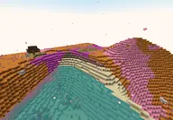
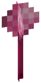
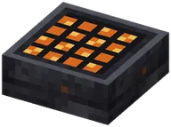
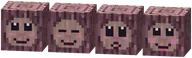
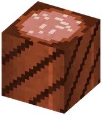

All biomesAlle biomen
The biomes of the Guhmension, the Guheinde, the Guhmaag and the Barbecuether.
De biomen van de Guhmensie, het Guheinde, de Guhmaag en de Barbecuether.
BiomesBiomen
| BiomeBioom | TerrainTerrein | What it looks likeHoe het eruitziet |
|---|---|---|
| Guh FieldsGuhvelden | rolling hillsglooiende heuvels | Pink wool hills with big kaasknabbel patches.Roze wolheuvels met grote kaasknabbelvlakken. |
| Knabbel CrumbsKnabbelkruimels | rolling hillsglooiende heuvels | Mostly kaasknabbels on top, extra veins below.Vooral kaasknabbels bovenop, extra aders eronder. |
| Pink PuffsRoze pluisjes | rolling hillsglooiende heuvels | Soft plain pink wool, lots of guhs.Zachte roze wol, veel guhs. |
| Mika's BiomeMika's bioom | rolling hillsglooiende heuvels | Rare. Darker magenta wool, a little crying obsidian at every height, a dark sky, the odd Mika.Zeldzaam. Donkerder magenta wol, wat huilende obsidiaan op elke hoogte, een donkere lucht, af en toe een Mika. |
| Kaas FlatsKaasvlakte | almost flatbijna vlak | A flat plain of kaasknabbels criss-crossed with pink wool. Great for building.Een vlakte van kaasknabbels met roze wolstrepen. Heerlijk om op te bouwen. |
| Guh MeadowsGuhweides | almost flatbijna vlak | Flat pink wool with pink powder flowers and the biggest guh herds.Vlakke roze wol met roze poederbloemetjes en de grootste guhkuddes. |
| Guh PeaksGuhpieken | very steepheel steil | Towering pink wool mountains and spikes (up to ~y215) with white wool tops.Torenhoge roze wolbergen en pieken (tot ~y215) met witte wollen toppen. |
| Vads CliffsVadskliffen | very steepheel steil | Sheer pink and magenta terracotta cliffs, rich in Vahoege Vads.Steile roze en magenta terracotta kliffen, rijk aan vahoege vads. |
| Guh SeaGuhzee | almost flatbijna vlak | Flat land full of pink water pools (1–3 deep) with guh-head lily pads and schools of guh fish.Vlak land vol roze waterpoelen (1–3 diep) met guhhoofd-waterlelies en scholen guhvissen. |
| Diepe GuhzeeDiepe Guhzee | sea, 28 deep (y 34–62)zee, 28 diep (y 34–62) | Big deep pink seas with a sand bottom, kaaskoraal, seagrass, kelp, guh fish and Zeemeerguhs, a dam with beaches around them, and one Guhbubbel in the middle.Grote diepe roze zeeën met een zandbodem, kaaskoraal, zeegras, kelp, guhvissen en Zeemeerguhs, een dam met strandjes eromheen, en één Guhbubbel in het midden. |
| Guh Crystal MineGuhkristalmijn | underground, y30–60ondergronds, y30–60 | Rare. Caves lined with crystal stone and glowing guh crystals that sing (a high guh) when you come close.Zeldzaam. Grotten vol kristalsteen en gloeiende guhkristallen die zingen (een hoge guh) als je dichtbij komt. |
| KaasmoerasKaasmoeras | almost flatbijna vlak | A misty swamp with bouncy borrelende kaassaus, kikkerguhs, kaasmotten, Kaasmoerasguhs and the Moerasheks-Mika's hut.Een mistig moeras met stuiterende borrelende kaassaus, kikkerguhs, kaasmotten, Kaasmoerasguhs en de paalhut van de Moerasheks-Mika. |
| VadswoudVadswoud | rolling hillsglooiende heuvels | A mint-green forest of giant guh trees with faces in the bark, knabbelbessen, guh nests and the treehouse village.Een mintgroen woud van reuzenguhbomen met gezichtjes in de schors, knabbelbessen, guhnestjes en het boomhutdorp. |
| GatenkaasgrottenGatenkaasgrotten | underground, below y36ondergronds, onder y36 | Round cheese holes, cheese stalactites, glowing kaasmos, kaaskorrelerts and the Stille Voorraadkelder.Ronde kaasgaten, kaasstalactieten, gloeiend kaasmos, kaaskorrelerts en de Stille Voorraadkelder. |
The ground: netherrack at y0, then always solid (pink wool, ores, caves) up to y30. The surface starts from y30 and its shape depends on the biome: almost flat, rolling hills, or very steep mountains and cliffs.
De grond: netherrack op y0, daarna altijd vol (roze wol, ertsen, grotten) tot y30. Vanaf y30 begint het oppervlak en de vorm hangt af van het bioom: bijna vlak, glooiende heuvels of heel steile bergen en kliffen.
25 / 25
| NameNaam | KindSoort | DimensionDimensie | StructuresBouwwerken | AboutOver | |
|---|---|---|---|---|---|
 | Asdal | BiomeBioom | The Guh BarbecuetherDe Guhbarbecuether | 3 | Asdal is een bioom uit Guhs. |
 | Diepe Guhzee | BiomeBioom | The GuhmensionDe Guhmensie | 2 | Until now the Guhmension only had its shallow pink pools. Now it has real seas: the Diepe Guhzee...Tot nu toe had de Guhmensie alleen haar ondiepe roze poeltjes. |
 | Gatenkaasgrotten | BiomeBioom | The GuhmensionDe Guhmensie | 5 | Below about y 36 (and at least 15 blocks under the surface) the ground of the Guhmension is sometimes one big...Onder ongeveer y 36 (en minstens 15 blokken onder het oppervlak) is de grond van de Guhmensie soms één grote... |
 | Guhkristalmijn | BiomeBioom | The GuhmensionDe Guhmensie | 1 | Dig down in the Guhmension and now and then you break into a crystal mine: caves (between y30 and y60) lined...Graaf in de Guhmensie naar beneden en af en toe breek je een kristalmijn binnen: grotten (tussen y30 en y60)... |
 | Guhmaag | BiomeBioom | The Guh stomachDe Guhmaag | Guhmaag is een bioom uit Guhs. | |
 | Guhpieken | BiomeBioom | The GuhmensionDe Guhmensie | 6 | Guhpieken is een bioom uit Guhs. |
 | Guhpolder | BiomeBioom | The GuhmensionDe Guhmensie | 2 | Soft, sparse flakes, and now and then a tiny pink guh head.Zachte, losse vlokjes, en af en toe een piepklein roze guhkopje. |
 | Guhvelden | BiomeBioom | The GuhmensionDe Guhmensie | 41 | Guhvelden is een bioom uit Guhs. |
 | Guhwai'i | BiomeBioom | The GuhmensionDe Guhmensie | 4 | A tropical island (about 250 blocks across) in a warm turquoise lagoon, towards the Diepe Guhzee.Een tropisch eiland (zo'n 250 blokken breed) in een warme turquoise lagune, richting de Diepe Guhzee. |
 | Guhweides | BiomeBioom | The GuhmensionDe Guhmensie | 42 | Guhweides is een bioom uit Guhs. |
 | Guhzee | BiomeBioom | The GuhmensionDe Guhmensie | 1 | Guhzee is een bioom uit Guhs. |
 | Het Guheinde | BiomeBioom | The GuheindeHet Guheinde | 2 | Het Guheinde is een bioom uit Guhs. |
 | Houtskoolvlakte | BiomeBioom | The Guh BarbecuetherDe Guhbarbecuether | 3 | Houtskoolvlakte is een bioom uit Guhs. |
 | Kaasmoeras | BiomeBioom | The GuhmensionDe Guhmensie | 2 | A misty, bubbling swamp on flat, wet land in the Guhmension (about 4% of the surface): olive-yellow grass,...Een mistig, borrelend moeras op vlak, nat land in de Guhmensie (ongeveer 4% van het oppervlak): olijfgeel... |
 | Kaasvlakte | BiomeBioom | The GuhmensionDe Guhmensie | 40 | Kaasvlakte is een bioom uit Guhs. |
 | Knabbelkruimels | BiomeBioom | The GuhmensionDe Guhmensie | 38 | Knabbelkruimels is een bioom uit Guhs. |
 | Knuffeldal | BiomeBioom | The GuhmensionDe Guhmensie | 3 | Knuffeldal is een bioom uit Guhs. |
 | Mika's bioom | BiomeBioom | The GuhmensionDe Guhmensie | 7 | Mika's bioom is een bioom uit Guhs. |
 | Rookdelta | BiomeBioom | The Guh BarbecuetherDe Guhbarbecuether | 2 | Rookdelta is een bioom uit Guhs. |
 | Roze pluisjes | BiomeBioom | The GuhmensionDe Guhmensie | 40 | Roze pluisjes is een bioom uit Guhs. |
 | Satébos | BiomeBioom | The Guh BarbecuetherDe Guhbarbecuether | 3 | Satébos is een bioom uit Guhs. |
 | Sneeuwguhtoendra | BiomeBioom | The GuhmensionDe Guhmensie | 2 | White snowy hills next to the Guhpieken, with groves of sneeuwguhsparren (spruce-like guh trees with a sleepy...Witte besneeuwde heuvels naast de Guhpieken, met bosjes sneeuwguhsparren (sparachtige guhbomen met een... |
 | Vadskliffen | BiomeBioom | The GuhmensionDe Guhmensie | 6 | Vadskliffen is een bioom uit Guhs. |
 | Vadswoud | BiomeBioom | The GuhmensionDe Guhmensie | 2 | A misty, mint-green forest in the Guhmension (about 10% of the surface; the mist is light, you see some 60–90...Een mistig, mintgroen woud in de Guhmensie (ongeveer 10% van het oppervlak; de mist is licht, je kijkt zo'n... |
 | Worstenwoud | BiomeBioom | The Guh BarbecuetherDe Guhbarbecuether | 3 | Worstenwoud is een bioom uit Guhs. |